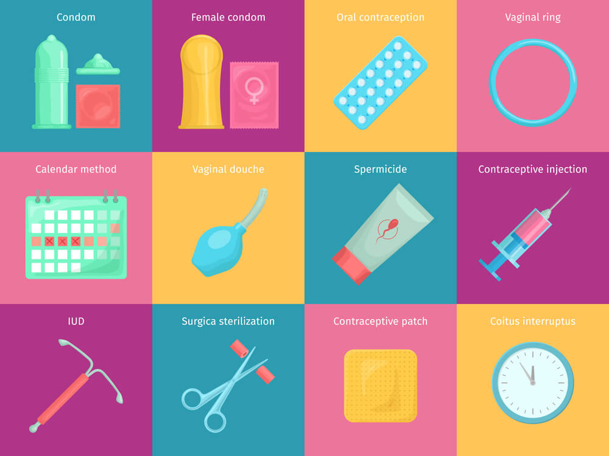

Los métodos anticonceptivos son todos aquellos capaces de evitar o reducir las posibilidades de un embarazo. Es recomendable utilizar los desde la primera relación sexual y durante toda la vida fértil.
¿Cómo actúa? Como una barrera que cubre el interior de la vagina e impide que el espermatozoide llegue al óvulo. Además protege de infecciones de transmisión sexual incluyendo VIH/SIDA. Se puede colocar hasta 8 horas antes de la relación sexual, si así lo deseas, o en cualquier momento antes de la relación sexual.
El condón masculino es una funda de de látex que se coloca en el pene erecto antes de la relación sexual y que lo cubre por completo. ¿Cómo actúa? Impide que los espermatozoides entren al interior de la vagina en la relación sexual, pues actúa como barrera y con esto evita el embarazo.
Píldora que se usa para prevenir el embarazo. Contiene hormonas que impiden que los ovarios liberen óvulos. La mayoría de los anticoncept ivos orales contienen estrógeno y progestina. También se llama anovula torio oral, pastilla anticonceptiva, píldora anovulatoria y píldora anticonceptiva oral.
Es un parche de plástico delgado, cuadrado, el cual se pega a la piel y libera hormonas similares a las que produce la mujer, inhibiendo la ovulación y haciendo más espeso el moco del cuello del útero.
Los implantes subdérmicos contienen una o más varillas pequeñas, finitas y flexibles que se colocan en el brazo (debajo de la piel), con anestesia local. Liberan una hormona (progestágeno) en forma contínua que inhibe la ovulación. Una vez colocado brinda protección entre 3 y 5 años, dependiendo del dispositivo.
Regreso a la pagina principal